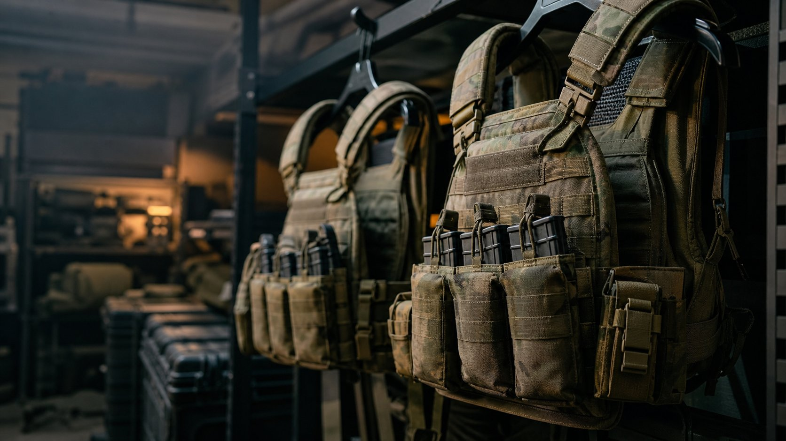
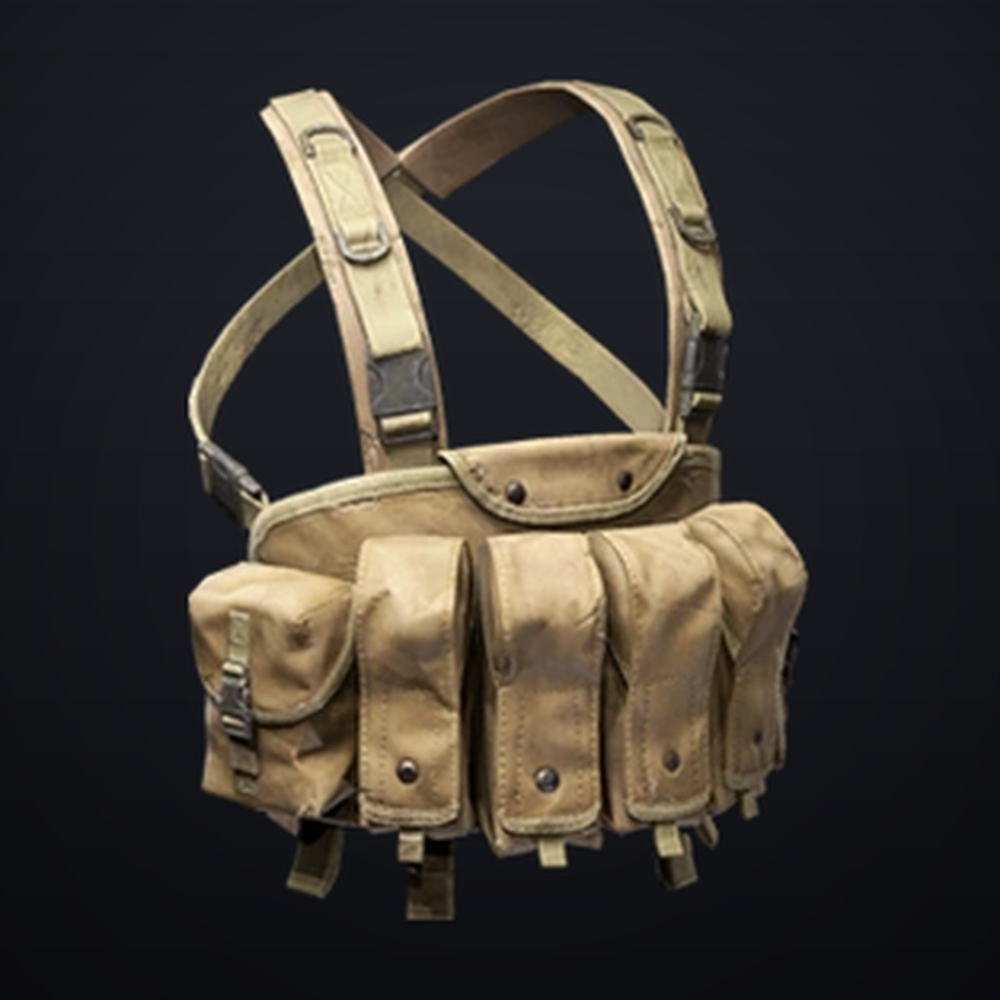
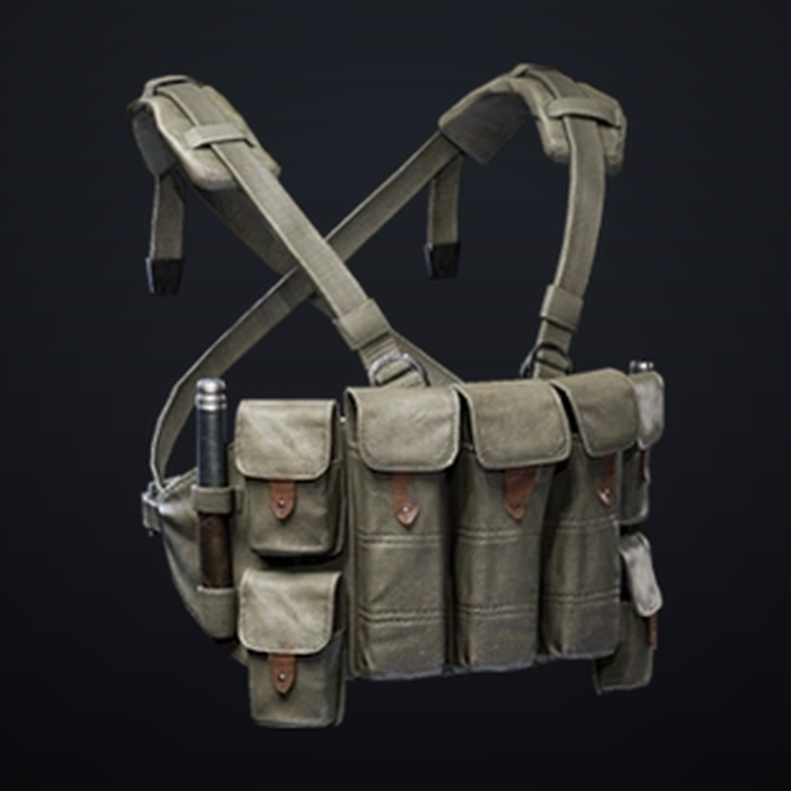
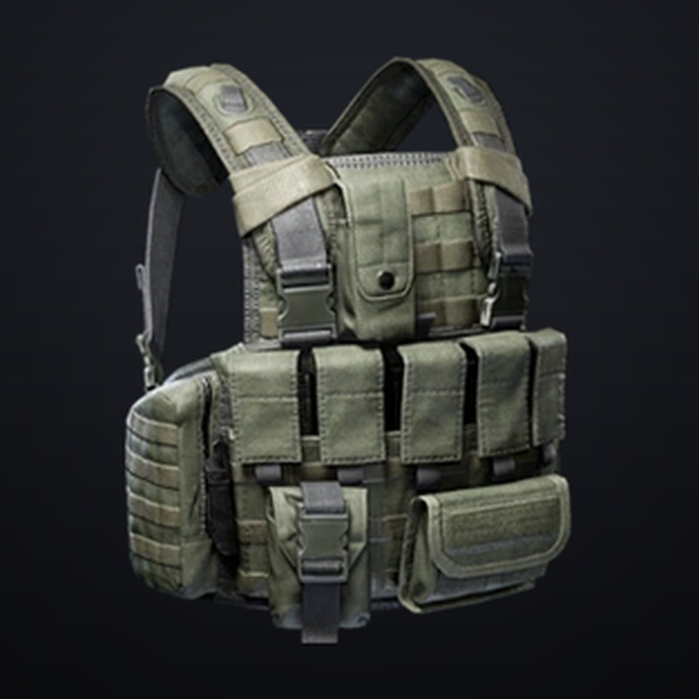
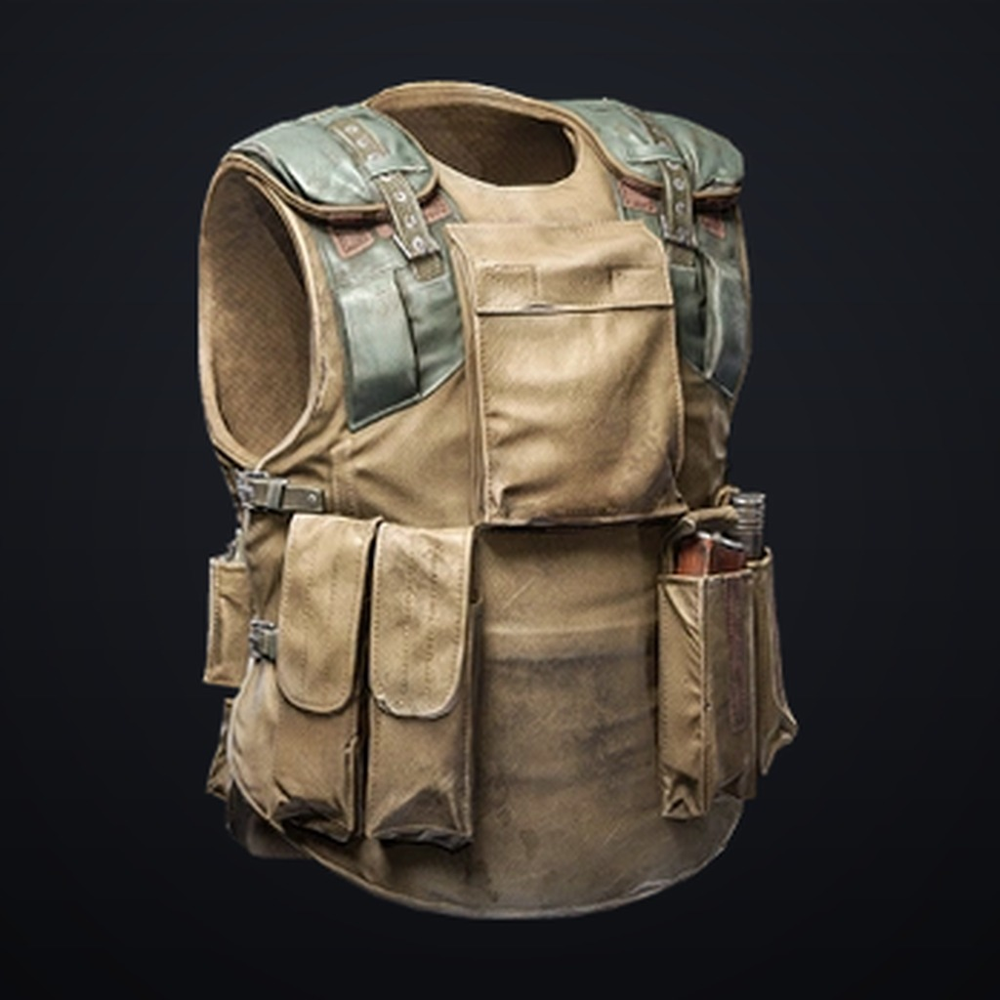
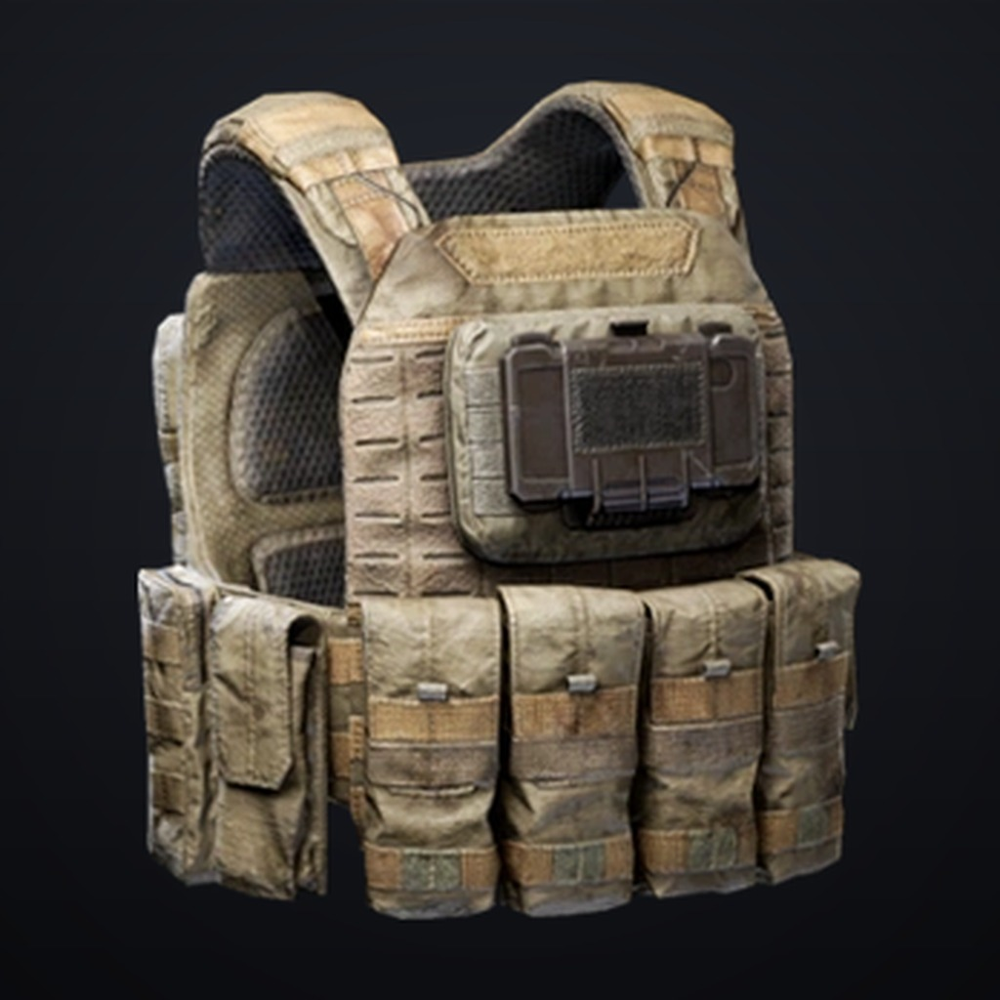
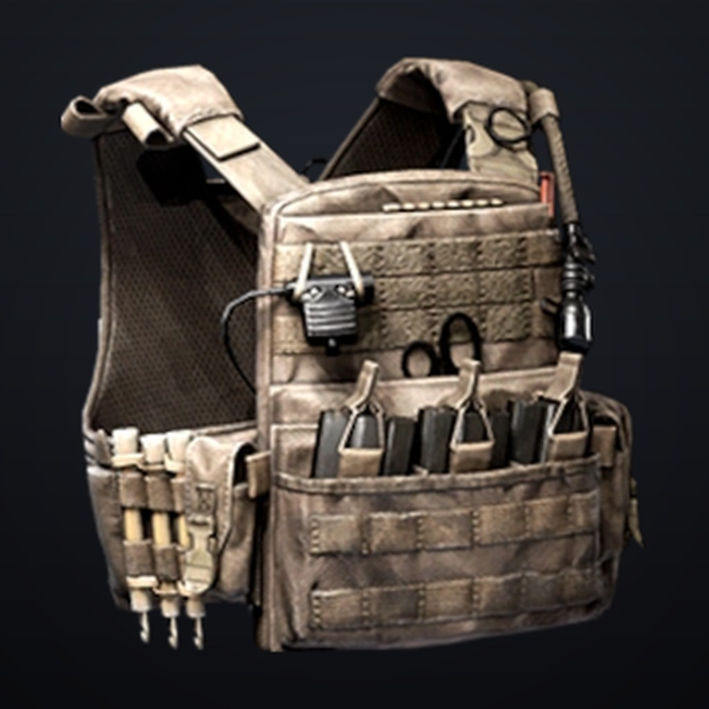
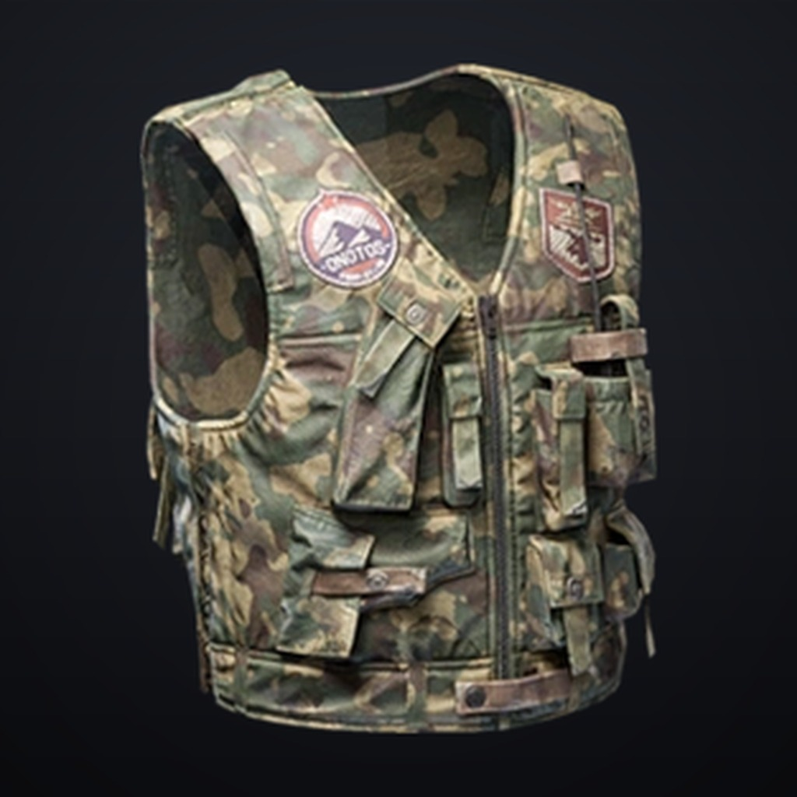
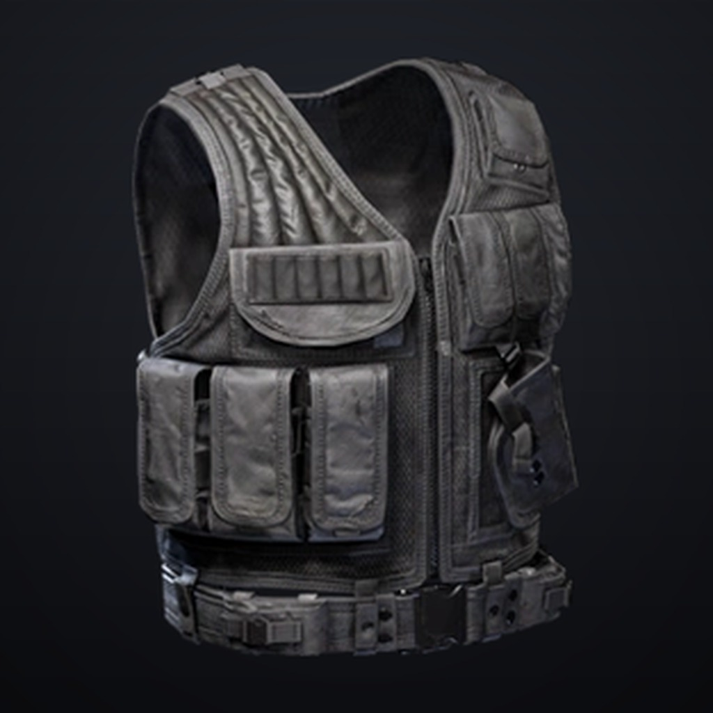
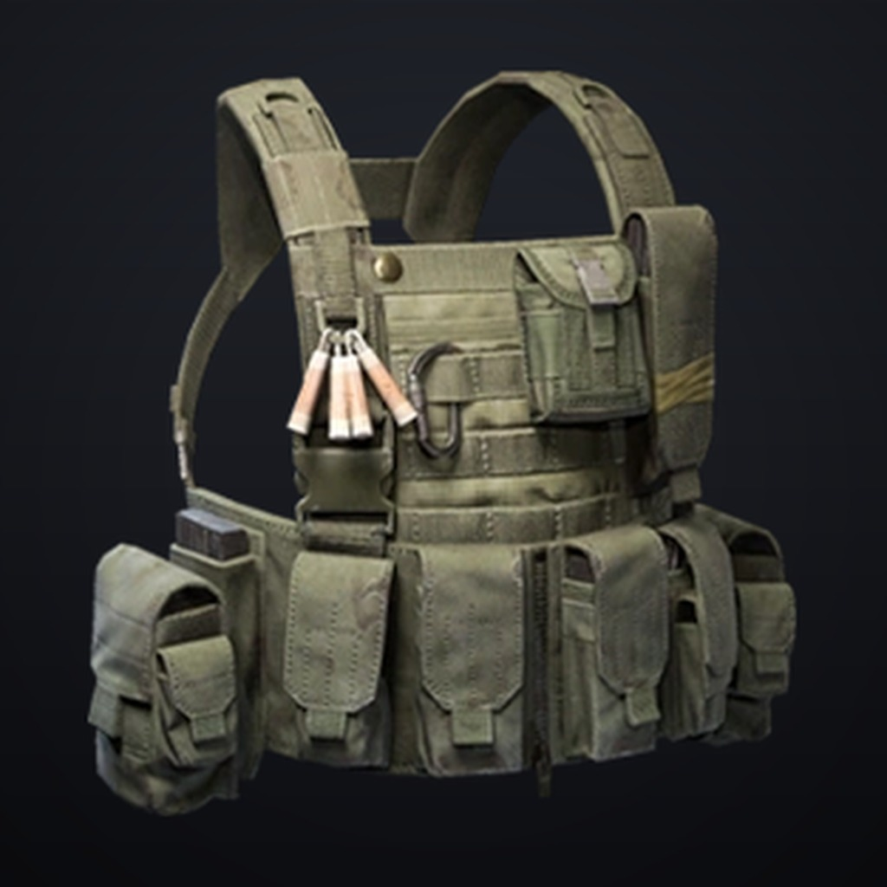

Rig ou gilet : le tableau de décision
La confusion la plus répandue porte sur la fonction : le rig et le gilet ne sont pas deux versions du même objet. Ils occupent deux emplacements différents et répondent à deux besoins différents.
| Critère | Gilet blindé | Rig |
|---|---|---|
| Fonction | Protéger le torse | Porter les accessoires et répartir la charge |
| Effet sur la protection | Direct et mesurable | Indirect : la répartition du poids modifie la mobilité |
| Impact du volume | Faible | Fort : c'est lui qui limite ce que vous emportez |
| Erreur fréquente | Surpayer un palier que votre munition ne pénètre pas | Le choisir trop petit et ne pas pouvoir porter les accessoires du build |
| Priorité d'achat | Le torse est la zone la plus rentable | Le rig correct avant le rig premium |
Autrement dit : un gilet protège, un rig transporte. L'erreur la plus coûteuse consiste à sacrifier la protection du torse pour gagner de la place de portage, alors que le torse est la zone qui reçoit le plus de balles en général. L'ordre d'achat rationnel est donc toujours le même : d'abord un torse correct, ensuite un rig de taille adaptée au build, et seulement ensuite l'optimisation du portage.
1. Rig vs gilet blindé : le choix fondamental
| Critère | Rig (chest rig) | Gilet blindé |
|---|---|---|
| Protection | Éclats uniquement | Balles (selon palier) |
| Poids | 1–2 kg | 5–10 kg |
| Mobilité | Maximale | −5 à −12 % vitesse |
| Slots | 6–12 rapides | 8–16 + poches |
| Idéal pour | CQB rush, rat kits | Moyen-long rayon |
Le rig à slots positifs
La même logique que pour les sacs s'applique aux rigs, et elle est même plus rentable : un rig est porté sur le corps, il n'occupe donc pas de case de sac. Un rig qui rend plus de slots qu'il n'en consomme vous offre de la capacité de loot sans aucun coût d'espace dans le sac.
La règle du rig positif. Comptez les slots qu'un rig offre, puis les cases qu'il occupe. Le rapport est positif dans un sens très simple : un rig qui garde 14 slots pour 9 cases occupées est un rig qui vous donne cinq cases de loot gratis — l'équivalent d'un sac entier, sans le poids. C'est pourquoi les vieux rigs de la communauté reviennent dans tous les guides d'optimisation : ils sont plus volumineux que les modèles récents, mais ils stockent mieux. Un rig dense qui n'offre que dix slots pour dix cases occupées est, lui, un objet de Slot Park, pas un rig. Communautaire
Le réflexe de rangement. Un rig bien choisi se remplit de ce qui a le meilleur rapport valeur par case : attachements, munitions, médicaux, et casque quand le format le permet. Le reste du contenu se répartit entre le sac et les conteneurs à slots positifs. Deux boutons de l'interface font le travail à votre place — Kit et Quick Organize — et ils trouvent les objets même enfouis dans un rig ou au fond d'une pile de sacs. Communautaire
2. Conseils d'opérateur
- Rig léger + T4 gilet séparé : souvent le meilleur combo — poids géré, protection T4 conservée.
- Slots de munition d'abord : un rig sans 90+ balles c'est une balise de mort.
- Poche médicale dédiée : garrot accessible en 1 touche — l'animation de soin rapide existe pour ça.
- Granades slot : 2 slots minimum pour stun/frag en CQB — la S7 a ajouté la M290 craftable.
- Camo matching : purement cosmétique, mais vos ennemis aussi aiment le bon look.
S7 + Tactical Belt
La Tactical Belt (Core Mastery S7) ajoute des slots de ceinture : vous portez gilet + rig + ceinture, la charge idéale entre autonomie et poids.
Pro tip
Combinez rig + sac à dos léger : tout le loot passe par le sac, le rig ne touche qu'aux armes et meds.
3. Les règles qui dictent le rig
Un rig, c'est un gilet sans protection : uniquement des poches. Il ne vous sauve pas, il vous permet de porter. La question n'est jamais « quel rig est le meilleur », mais « quel rig correspond à ce que je ramasse et à ce que je veux garder en cas de mort ».
- Plafonds par mode : Normal = T4 maximum, Lockdown = T5 maximum, Forbidden = T6. Le choix du mode décide de votre tier avant même votre budget.
- Plafond de valeur : 900 000 K d'équipement en Lockdown. Au-delà, le raid refuse de démarrer.
- RNG de pénétration supprimée : depuis la S7, la bonne munition traverse presque toujours. comptez sur votre munition, pas sur la chance.
- TTK allongé, headshots récompensés : la précision compte davantage qu'en S6. Le premier tir placé vaut plus qu'une rafale.
4. Les munitions à connaître
| Munition | Armes | Ce qu'elle change |
|---|---|---|
| Poche verticale | Cartouches 5.56 / 7.62 | Accès immédiat, dosseret rapide |
| Poche horizontale | Chargeurs 30 rounds | Moins rapide, mais plus compacte |
| Rangement molle | Bocales, clés, outils | Garde les petits objets du bruit du métal |
5. Quel kit pour quel budget
| Profil | Budget | Configuration | Usage |
|---|---|---|---|
| Léger | 20 000 – 45 000 K | Rig minimal, 4 poches | Raid court, une arme |
| Standard | 45 000 – 90 000 K | Rig modulaire complet | Raid Lockdown classique |
| Chargeur | 90 000 – 150 000 K | Rig lourd + rangement munitions | Raid long, squad |
6. Les erreurs qui coûtent cher
- Choisir un rig par son prix : un rig cher sans bonne répartition de poches est un rig inutile.
- Ignorer le coût de l'équipement total : le rig s'ajoute au plafond de 900 000 K du Lockdown.
- Porter un sac lourd en raid Lockdown : au-delà d'un seuil, le poids transforme un duel en course-pours.
- Mettre les munitions dans les poches du torse : la troncature de la visée s'en ressent.
7. FAQ
Quel rig pour la S7 ?
Un rig de type chest-rig modulaire, avec une range séparée et des poches compatibles avec vos munitions.
Rig ou sac ?
Le rig pour l'accès rapide en combat, le sac pour le volume. Les meilleurs raid runs combinent les deux.
Combien coûte un kit complet ?
En Lockdown, la valeur totale de l'équipement est plafonnée à 900 000 Koen. Un rig mal choisi peut vous faire dépasser et bloquer le raid.
Le rig vaut-il le coup ?
Oui, parce qu'il augmente ce que vous pouvez emporter. Sans lui, vous laissez la valeur au sol.
Galerie officielle
Artworks officiels du wiki ABI. Un rig n'ajoute aucune protection : il ajoute de la capacité. Les modèles « Armored Rig » embarquent une plaque, les autres non.

b3
Chest rig universal B3, six a huit poches et un poids negligeable.

b4
Chest rig tactique B4, plus de poches que le B3.

b6
B6, l'evolution la plus chargeuse de la famille B.

militia
Rig milice,charge et modules Rig.

al assault
Rig AL Assault, premier pas vers le blindage.

h tac a8

service
Gilet de service, l'entree de gamme du vestiaire.

926 nightowl
Rig 926 Night Owl, très reconnu en escouade.

stormtrooper
Stormtrooper Type 3, la version haute capacite.